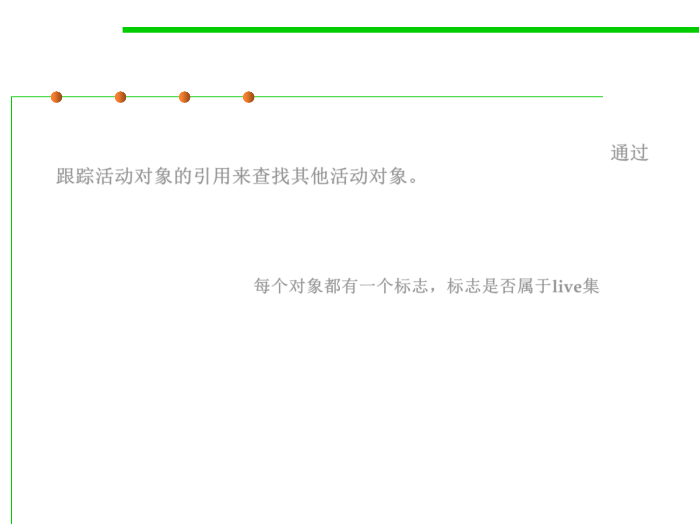

8.1 Metrics, Principles, and Methods of Construction for Performance
Mark-Sweep
▪ Mark-sweep is such a tracing algorithm — it works by following
(tracing) references from live objects to find other live objects. 通过
跟踪活动对象的引用来查找其他活动对象。
▪ Implementation of the live set:
– Each object has a mark-bit associated with it, indicating whether it is a
member of the live set. 每个对象都有一个标志，标志是否属于live集
▪ There are two phases:
– Mark phase:
• starting from the roots, the graph is traced and the mark-bit is set in each
unmarked object encountered.
• At the end of the mark phase, unmarked objects are garbage.
– Sweep phase: starting from the bottom, the heap is swept
• mark-bit not set: the object is reclaimed
• mark-bit set:the mark-bit is cleared